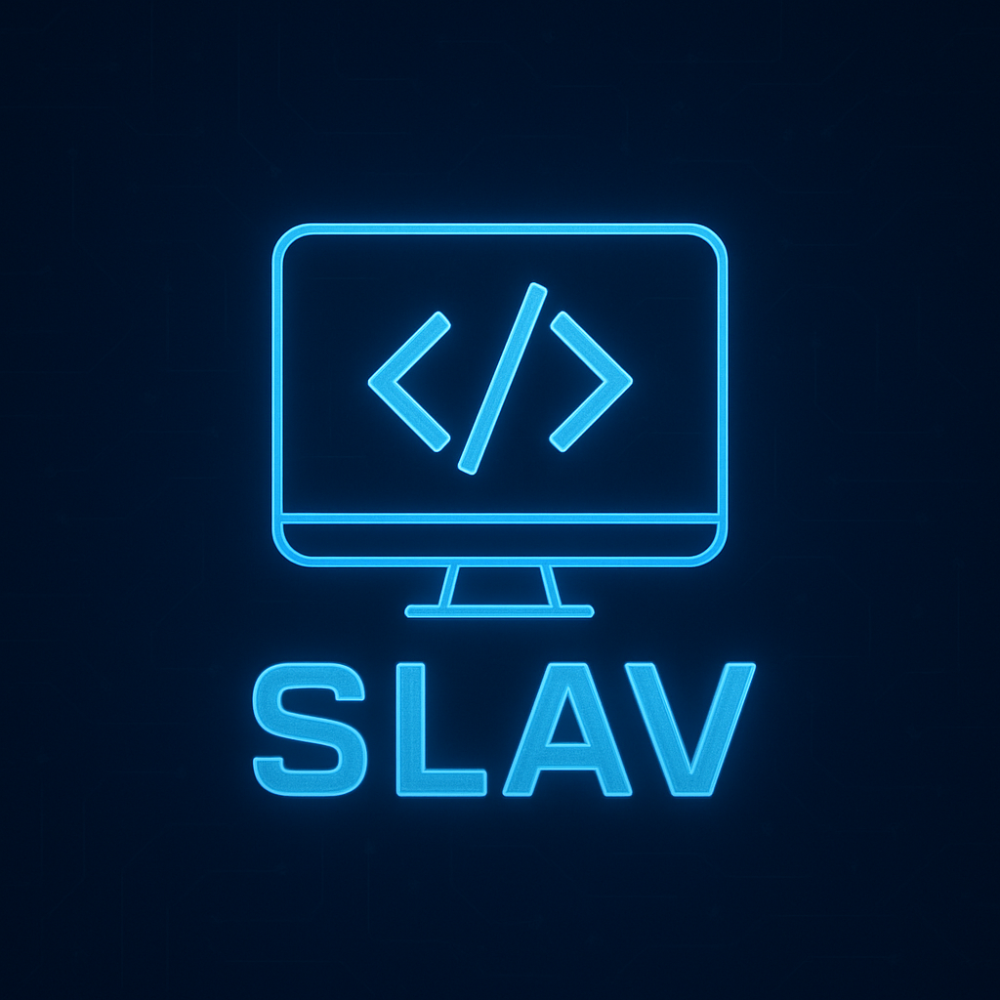
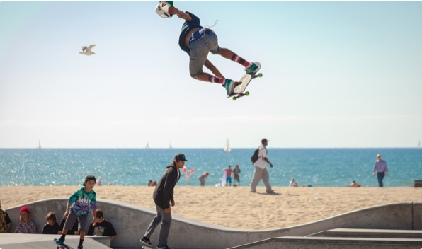

About me

Highly accomplished and results-driven Senior Full-Stack Developer with a Master's degree in Computing and Information Technology and extensive experience (+10 years) across diverse technologies and project environments.
Proven ability to lead development teams, manage complex projects from conception to deployment, and optimize system performance. Adept at working with various programming languages, frameworks, cloud platforms, and big data solutions.
Committed to continuous learning and delivering high-quality, scalable web applications.
Projects

Amelia App
June 2017
Portland
March 2017

Denz for Nilon
Jan 2017
Work
Senior Software Developer - ESG & Data Intelligence - R&D
EcoOnline Global · Contract · Zagreb, Croatia · Remote
- Developed an ESG GHG module using PHP, enabling companies to efficiently report and aggregate data.
- Led a cross-functional team to innovate features for high-profile clients like Intel and Canon.
- Enhanced software capabilities to support carbon accounting and compliance with sustainability regulations.
Skills: Full-Stack Development, MySQL, AWS, Microsoft Products, JavaScript, Confluence, Docker, SDLC, Laravel, Lumen, SaaS, DevOps, Server Side Programming, Microsoft Copilot, Jira, Vagrant, PHP, Redis
Senior Full Stack Developer then Managing Director
Biome · Full-time · Greater Dublin · On-site
- Spearheaded the development of innovative features in collaboration with the CEO, enhancing product offerings.
- Managed agile sprints and tasks, ensuring timely project delivery.
- Engineered robust backend solutions using PHP and MySQL, optimizing complex SQL queries for superior performance.
- Vue.js, ESG solutions GHG management, Managing expectations of clients like Intel & Canon
Skills: Code Review, JavaScript, Management Professional, Linux System Administration, DevOps, Software Infrastructure, Director level, PHP, MySQL, Startup Development
Senior Full Stack Developer Freelance
Voxgig · County Dublin, Ireland
- Microservices architecture with Node.js, JavaScript, and Python.
- Active development using seneca.js library and Google Cloud Platform services.
- Built a Twitter streamer and aggregated large data sets for real-time graph reports.
- Integrated vespa.ai big data serving engine and enabled search option.
- Used Python to scrape Twitter and extract data automatically.
Skills: Code Review, JavaScript, React.js, Computer Science
Lead Senior Full Stack Developer
Popertee Ltd · Full-time · County Dublin, Ireland · On-site
- Actively led a team of 2 to 5 developers as the initial developer who created the code through the entire product development cycle, ensuring timely delivery.
- Integral part of the product team to develop main development tasks & finding new features to implement.
- From initial choosing framework Laravel & vue.js, vuetify and other packages.
- Optimizing SEO migrating & rewriting code to nuxt.js framework.
- Implemented sprints within team.
- Python data science created algorithm to handle big data sets to give back trademarked calculations.
- Spearheaded the migration of systems from Microsoft Azure to AWS, optimizing resource usage and performance.
- Developed web scrapers in Python and created an internal CRUD CMS, enhancing operational efficiency.
- Implemented SEO optimizations using Nuxt.js, significantly improving site visibility and user engagement.
- Automating scripts with ansible, jenkins and bash scripts.
- Teaching new developers and focusing my time with help fixing all the bugs.
- Main languages used Javascript, PHP, Python, Java, Bash.
- Agile programming using Jira tracking software Optimizing Azure and Aws resources to get more out with less resources CPU and memory.
- Worked close with brilliant data scientiests.
Skills: Code Review, JavaScript, Computer Science, Nuxt.js, PHP, Laravel, Lumen, AWS, Azure, Agile Methodologies, Team Leadership, Agile Project Management, Python, Full Life Cycle Development, Feature Writing, Vue.js, Vuetify, SEO, Sprints, Data Science, Azure DevOps Server, CRUD CMS, Ansible, Jenkins, Bash, Java
Senior Full-Stack Web Developer
Gauss Development · Osijek, Croatia
- Backend development of web projects and applications using PHP(mostly laravel) & Javascript (Node.js) language.
- API integration and creation new API-s, payment system integrations.
- Java android application development using android studio.
- Frontend development of website mostly using vue.js, jquery, javascript, angular.js.
Skills: Code Review, JavaScript, Computer Science
Freelance Web Developer
Handstudio · Zagreb, Croatia
- Creation of custom CMS system with frontend design using the Laravel ecosystem with multi-auth functioning.
Skills: Code Review, JavaScript, Computer Science
System Administrator
Uoos.hr
- Maintenance of computer system, administration of website, creating new custom article content, integration of new features in wordpress, updating articles.
Skills: Computer Science
Assistant Electrician
Service Elgra · Osijek Croatia
- Practical work at a firm for services of home appliances, two working days a week, full working hours.
Education
MEng in Computing and Information Technology
Faculty of Electrical Engineering, Computing and Information Technology Osijek
Result: Magna Cum Laude
BSc in Computer Programming
Faculty of Electrical Engineering, Computing and Information Technology Osijek
Result: Magna Cum Laude
Electronics technician
Electro-Technical High School Osijek
Language
Croatian Native language
English Bilingual
Major Projects
- At EcoOnline, following the acquisition of Biome, led a team as Senior Software Developer to successfully integrate Biome’s SaaS platform into the EcoOnline ecosystem, implement client-specific requirements, and drive the development of new features. Collaborated across multiple teams and projects within a large-scale organization. Spearheaded the successful migration of Biome’s SaaS infrastructure to AWS, initiating and expanding AWS expertise.
- As a Senior Full Stack Developer, later Managing Director on a 3-member team, contributed to the development of a SaaS platform that led EcoOnline, a leading EHS software firm, to acquire Biome Environmental Limited — a specialized provider of environmental data monitoring and analysis solutions with blue-chip clients including Intel and Canon.
- Lead as Senior Full-Stack Developer on project at Popertee from start to being proven to being a major player in popup retail spaces.
- Lead Senior Full-Stack Developer for the website of the Croatian Chamber of Economy (hgk.hr), involving the creation of a custom, web-based front-end and back-end.
- Lead Senior Full-Stack Developer for the website of the Croatian Academic & Research Network (meduza.carnet.hr).
- Project Manager & Lead Developer for alliantranslate.com, including API development for iOS mobile connection, upgrading legacy PHP code to new standards, and integrating the Twilio service.
- Lead Developer for a booking system in PHP on a WordPress site, integrating a third-party API for venezialines.com.
- Senior Full-Stack Developer for a PHP Lumen API connected to an Android app (also developed).
- Developed a Master’s thesis: a web interface for a self-adaptive online test generator using Laravel and JavaScript, featuring a dynamic test generator based on user inputs, a multi-authentication system, and Bootstrap front-end design.
Technical Skills
- Specialized in creating back-end and front-end with Laravel framework and Vue.js (Javascript).
- Strong understanding of advanced programming concepts and methodologies.
- Strong understanding of several programming languages, including PHP, Javascript, CSS, Java, SQL, Python.
- Vast exposure to SQL (MySQL, MongoDB, SQL Queries).
- Database Design and creation.
- UML and Object-Oriented Modelling (Analysis & Design) Techniques and Tools.
- Various web technologies such as TCP/IP, Responsive Design, REST, AJAX, XML, JSON, CSS, Cookies, Sessions, Cache, API, Video Transcoding.
- Using tools like Sublime Text, Android Studio, Vagrant, countless more...
- Assembly, C++, Python languages experience at college.
- Data communications and computer networks.
- Linux advanced knowledge.
- Nginx & Apache administration.
- Unit & Integration Testing.
- Jenkins and Ansible automation.
- Vagrant virtual machines, Virtual box.
- Applying data science theories on big data sets of documents to extract calculations.
- Microsoft Azure, AWS, Google Cloud Platform.
Interests & Achievements
- Continuous upskilling in Artificial Intelligence and Machine Learning.
- Active contributor to open-source projects and developer communities.
- Published research on adaptive test generation and web-based learning systems.
- Speaker at local tech meetups and workshops.
- Passionate about mentoring junior developers and sharing knowledge.
- Enthusiast in cloud computing, big data, and automation.
- Enjoys cycling, hiking, and exploring new technologies.
- Computers and technology.
- Gym training.
- Avid runner, long distance ultra runner. Multiple Ultra races finished. 100k. UTMB finisher.
- Cycling, hiking, gardening, reading, travel, socialising.
- Learning new programming languages.
- Mountaineering.
- Gardening vegetables and fruits.
- I hold a full, clean driving licence.
- EU citizen, based in Zagreb, Croatia.
- Own and operate a craft business based in Croatia.
- Experience with remote and on-site work.